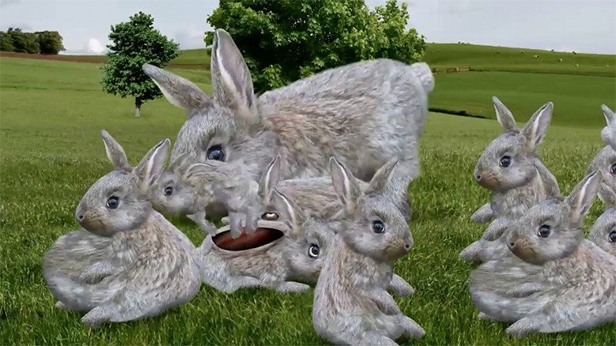

idea

Cyriak
https://www.youtube.com/watch?v=zKPhjkw3Y84-どんな人
イギリスのアニメーターです。youtubeに動画作品を挙がっています。自分の体だったり動物の写真を加工し動きをつけて不思議な世界を表現しています。内容はシュールでグロテスクなものが多いです。今回は比較的キモくない作品を紹介しているので大丈夫です。
-解説
うさぎが跳ねたり飛んだりしてたら分裂して合体する動画です。
-好きなところ
キモいけどなんか中毒性がある。そんな作品が多くてなぜかはまります。